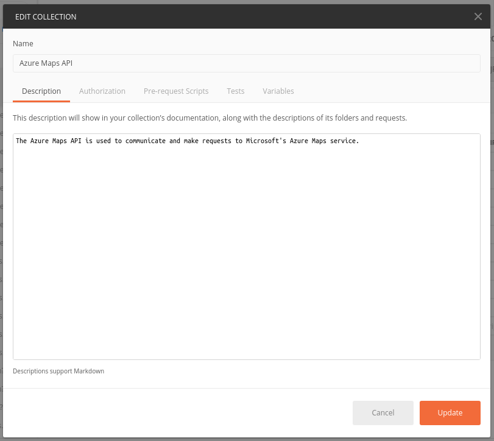
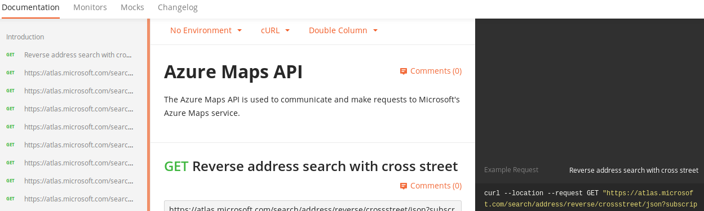
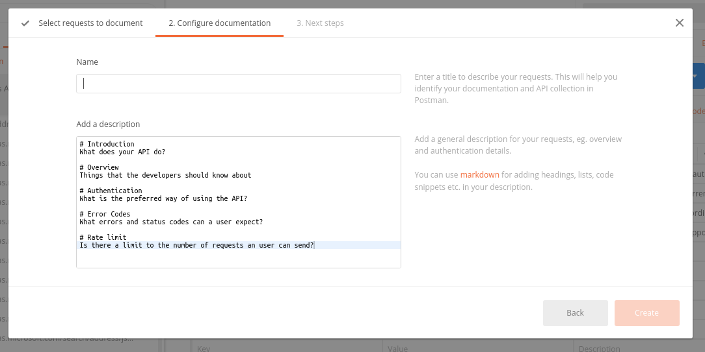
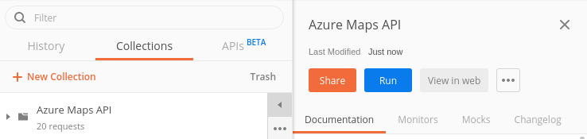
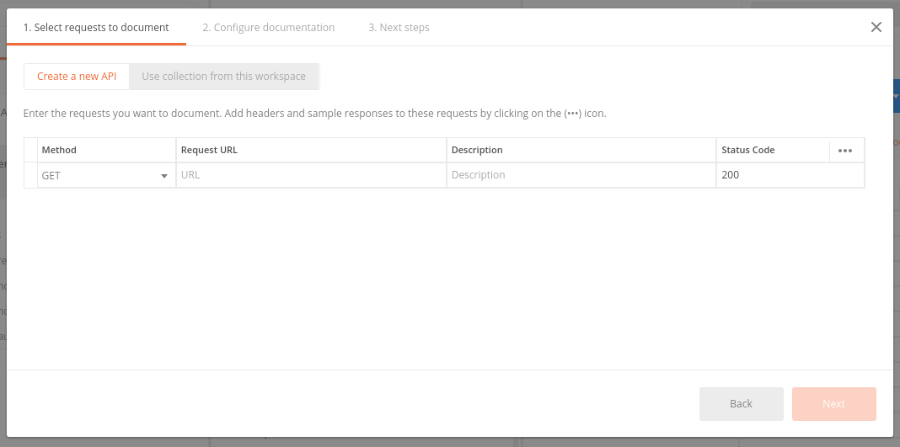
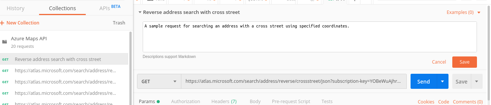
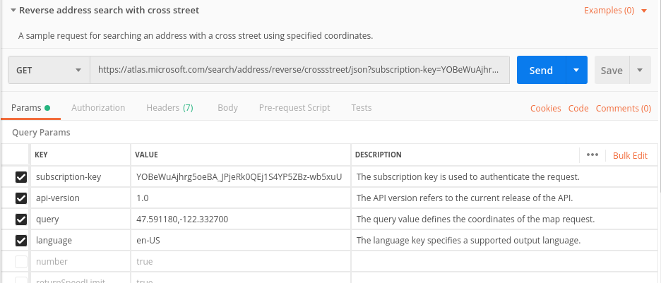
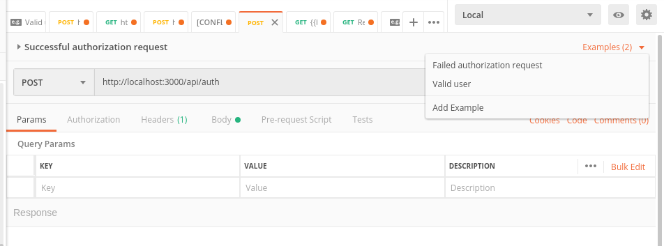
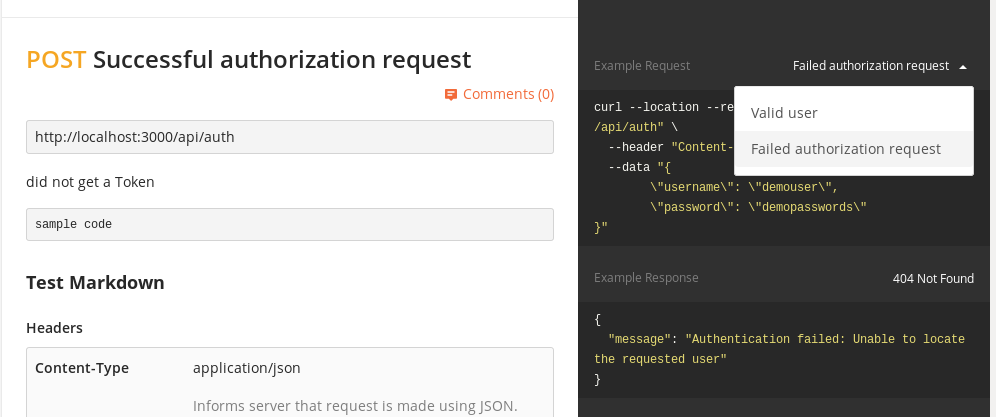

Improving API documentation generated in Postman¶
Postman includes the option to publish API documentation once the user is done designing and testing the API. Publishing documentation is available for free Postman accounts, although limitations to public views and domain name apply.
Postman creates documentation based on Markdown and plain text added using the API editor. The greater the amount of description written for the API prior to publishing, the more robust the output documentation.
The following steps are recommended to improve Postman generated documentation:
API documentation is generated at a Collection and Folder level. Ensure that the Collection and Folder name is accurate and a brief description is provided, since both appear at the top of the generated documentation in the Introduction area. To change the Collection name and add a description, click the options icon, and then Edit on the Collections pane.
The output documentation uses text descriptions for requests and APIs.
Postman provides a short template for documenting an API, if the user initiates documentation creation from the New > Documentation option.
Review generated API documentation at any time by extending the Collections pane and then clicking View in web. Note that Folders nested under a Collection do not have standalone documentation. If needed, duplicate the Folder as a Collection if separate documentation is required.
To document a single API or just a few requests quickly, click New > Documentation.
By default, Postman uses the request statement as the title of the request. Edit the title from the API editor by clicking the edit icon (pencil) or from the list of requests from the Collections pane. Add a description.
When documenting requests that use private information such as Authorization details or Bearer tokens, use Variables. For additional information, refer to Variables.
Use sentence case when adding a title to a request. Do not add punctuation at the end.
When writing descriptions for a request or API, keep the text short and use Markdown formatting sparingly. Include important information only. Descriptions for requests and APIs appear on the generated documentation.
Document necessary parameters and useful headers for a request using the Description column on the Params and Headers tabs. If the parameter or header already has a description in a request, it’s not necessary to repeat the text in another request. Note that text descriptions for parameters and headers do not appear in the generated documentation. However, they can be added in Markdown text or as a table to the API/request description.
Create separate examples using the API editor if an output or error code needs to be demonstrated. Click Examples > Add Example to add a separate example.
The added example is displayed as an option in the example pane in the output column.
Users can edit the team logo, URL, and Favicon in the Team Settings page. Note that other team settings may not be available for personal accounts.
Users can publish and unpublish public or private workspace documentation at any time.